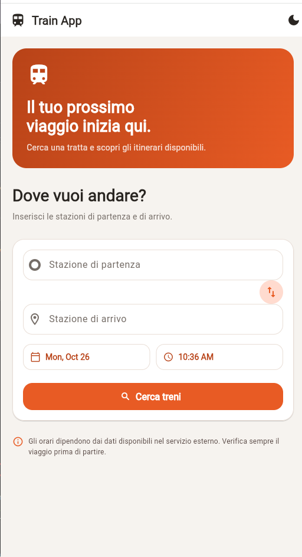
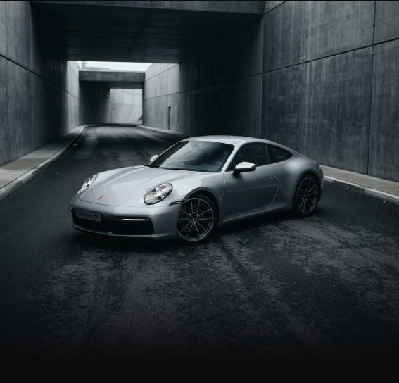

Mobile App
Mobile App
🏎️ 24h Le Mans
Applicazione mobile dedicata alla 24 Ore di Le Mans, sviluppata con React Native ed Expo.
React Native
Expo
Firebase
JavaScript
Una raccolta dei progetti che ho realizzato durante il mio percorso di studi e nel tempo libero.
Mobile App
Applicazione mobile dedicata alla 24 Ore di Le Mans, sviluppata con React Native ed Expo.
 Web App
Web App
Applicazione web pensata per organizzare terapie, appuntamenti e informazioni sui farmaci.
 Sito Web
Sito Web
Sito web realizzato per un barber shop, con servizi, prezzi, informazioni e posizione.

Mobile AppApplicazione mobile dedicata alla ricerca dei treni

Mobile AppUn'applicazione mobile sviluppata in Flutter per il noleggio di auto normali (utilitarie, berline, SUV, familiari), pensata per privati, turisti e professionisti che vogliono prenotare un'auto in modo semplice e veloce.
Applicazione mobile che permette di cercare itinerari ferroviari inserendo la stazione di partenza, quella di arrivo e la data e ora del viaggio. Presenta un'interfaccia intuitiva e moderna, con ricerca dei collegamenti, visualizzazione dei risultati e gestione degli errori in caso di tratte non disponibili.
Tecnologie: Flutter
Linguaggio: Flutter
Tipo: App
Applicazione mobile sviluppata in Flutter per il noleggio di auto normali (utilitarie, berline, SUV, familiari), pensata per privati, turisti e professionisti che vogliono prenotare un'auto in modo semplice e veloce.
Tecnologie: HTML,CSS,JavaScript
Linguaggio: HTML,CSS,JavaScript
Tipo: App
Ciao, sono Alessandro e sono uno studente ITS del corso Web & Mobile App Developer.
Prima di iniziare il percorso ITS ho studiato informatica all'Istituto Majorana, dove ho avuto modo di conoscere diversi linguaggi di programmazione, tra cui C, C++ e C#.
Durante il mio percorso di studi ho continuato ad ampliare le mie conoscenze, avvicinandomi allo sviluppo web e mobile. Ho lavorato con tecnologie come HTML, CSS, JavaScript, TypeScript, React, React Native,NoSQL,SQL,Firebase,Figma,pacchetto Office,Project Microsoft oltre ad aver studiato strumenti come Linux, GitHub.
Mi piace imparare attraverso la realizzazione di progetti concreti, mettendo in pratica quello che studio e cercando continuamente di migliorare le mie competenze.
Puoi trovare i miei progetti e seguire il mio percorso professionale anche online.